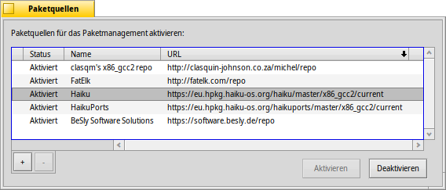

Deutsch
Deutsch Català
Català English
English Español
Español Français
Français Italiano
Italiano Magyar
Magyar Polski
Polski Português
Português Português (Brazil)
Português (Brazil) Română
Română Slovenčina
Slovenčina Suomi
Suomi Svenska
Svenska 中文 ［中文］
中文 ［中文］ Русский
Русский Українська
Українська 日本語
日本語 Paketquellen
Paketquellen
| Deskbar: | ||
| Ort: | /boot/system/preferences/Repositories | |
| Einstellungen: | ~/config/settings/Repositories_settings |
Paketquellen sind Sammlungen von Softwarepaketen. Standardmäßig konfiguriert ist die Haiku Quelle mit allen Paketen des Betriebssstems und HaikuPorts, die eine große Zahl an Portierungen und nativen Haiku Anwendungen bietet. Es existieren noch einige weitere Paketquellen, die von Haiku Enthusiasten zusammengestellt und gepflegt werden. Siehe dazu die Software Sites auf der Website.
Dies ist das Einstellungsfenster mit dem die Paketquellen verwaltet werden (auch erreichbar aus HaikuDepot's Menü):
Die erste Spalte in der Liste bekannter Paketquellen zeigt an, ob eine Quelle gerade aktiv ist. Befindet sich dort kein Haken, wird die Quelle auch nicht von HaikuDepot oder pkgman (in der Konsole) abgefragt. Die Buttons unten werden benutzt, um die ausgewählten Paketquellen zu oder zu . Noch schneller geht's mit einem Doppelklick, der den Status umschaltet.
Je nach Größe der Paketquelle und der Geschwindigkeit der Internetverbindung, kann das Aktivieren einer Paketquelle einige Sekunden dauern. Falls es länger dauern sollte, wird man durch die kleine Textbox über den Buttons darüber informiert, dass noch Transaktionen ausstehen. Dauern diese ungewöhnlich lange, wird nachgefragt, ob sie nochmal probiert oder abgebrochen werden sollen.
Um mit dem "" Button eine Paketquelle komplett entfernen zu können, muss diese deaktiviert sein.
Eine neue Paketquelle wird mit dem "" Button hinzugefügt, was dieses Fenster öffnet:
Um eine neue Paketquelle hinzuzufügen, wird einfach deren URL in das Textfeld eingefügt. Sie wird als "Unbekannt" angezeigt, bis sie aktiviert wurde.